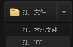
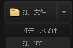
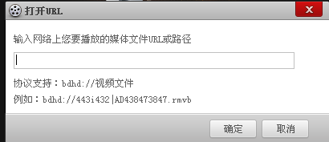

百度影音操作指南
1.媒体文件操作
百度影音是由百度公司最新推出的一款支持主流格式影片和音乐文件的本地及在线播放器。可以通过以下方式打开媒体文件：
第1种方式：从资源管理器打开
1)
有文件关联时，鼠标左键双击已经关联的媒体文件；
2) 有文件关联时，鼠标右键单击已经关联的媒体文件，选择右键菜单中的“使用百度影音播放”
3)
有文件关联时，鼠标右键单击已经关联的媒体文件，选择右键菜单中的“使用百度影音播放”影音播放。在百度影音主界面点击【】或鼠标左键双击列表中的媒体文件。
4)
鼠标右键单击媒体文件，选择“打开”即可观看视频。
第2种方式：打开系统“资源管理器”浏览文件打开并直接播放。
第1步：打开系统资源管理器浏览文件，有以下方式：
1）点击视频区中间的【】
2）双击视频区的空白区域
3）当没有文件正在播放或暂停时，点击【】
4）点击右上角【 】下主菜单的“打开”中的【】
】下主菜单的“打开”中的【】
5）鼠标右键点击视频区，打开右键菜单，选择【】
第2步：选择一个或多个媒体文件后，点击【打开（O）】
第3种方式：打开系统资源管理器浏览文件打开（不直接播放）。
第1步：打开系统资源管理器浏览文件。有以下方式：
1)
点击播放列表上方的【】
2)
鼠标右键单击播放列表，选择右键菜单中的【添加文件…】
第2步：选择一个或多个媒体文件后，点击【打开（O）】
第3步：在百度影音主界面点击【】或鼠标左键双击列表中的媒体文件
第4种方式：文件夹方式打开。
1) 点击主界面右上角【 】打开主菜单，选择【打开文件夹】
】打开主菜单，选择【打开文件夹】
2) 鼠标右键点击视频区，打开右键菜单，选择【打开文件夹】
3) 鼠标右键单击播放列表，选择右键菜单中的【添加文件夹】 ，在百度影音主界面点击【】或鼠标左键双击列表中的媒体文件。
第5种方式：拖曳。
1)
拖曳媒体文件到百度影音
2) 拖曳媒体文件或包含媒体文件的文件夹到主界面视频区
3)
拖曳媒体文件或包含媒体文件的文件夹到播放列表，在百度影音主界面点击【】或鼠标左键双击列表中的媒体文件。
2、查看媒体信息
点击右上角  下主菜单的“打开”中的 ，弹出以下对话框，可以查看您正在播放的媒体文件的信息：
下主菜单的“打开”中的 ，弹出以下对话框，可以查看您正在播放的媒体文件的信息：
3、打开在线播放文件
1）首页点击打开文件右侧 ，接着点击，接着会弹出
，接着点击，接着会弹出

输入相应的url地址，点击“确定”即可在线播放。
2）暂停或在百度影音主界面单击右键，点击代开URL
4、关闭文件
点击主界面下方的“停止”按钮
5、退出百度影音
点击主界面右上角的，或者主菜单里的“退出”，可以退出百度影音
2.基本播放功能
1、 播放/暂停
点击主界面下方的 按钮可以暂停影片播放，暂停后按钮变成 ，再点击这个按钮可以继续播放。也可以通过点击主菜单的【播放】子菜单下的完成同样的操作。
2、 快进快退
点击主菜单的【播放】子菜单下的，可以使影片快进5秒和快退5秒。更方便的做法，是使用热键进行这一操作，默认的热键是“→”和“←”。关于百度影音提供的热键信息，参见使用和设置热键。
3、
播放上一文件、下一文件
点击主界面下方的和按钮可以播放播放列表里的上一文件和下一文件，如何使用播放列表，参见使用播放列表。
4、 改变音量
点击主界面下方的，按钮图标变成，表示播放过程没有声音，再点击一次可以恢复。通过拖动旁边的滑杆可以改变音量的大小。更方便的做法，是使用鼠标滚轮进行调节音量的操作，滚轮向上滑动增大音量，向下滑动降低音量。
3.播放时的屏幕控制
1、改变播放模式您可以在播放的过程中将鼠标移到界面上部分，会出现“浮动控制栏” ，通过“浮动控制栏”轻松切换各种模式，也可以通过点击菜单里 的相应菜单项来切换，还可以通过热键进行切换。关于百度影音提供的热键信息，参见使用和设置热键。
2、设定总在最前点击主菜单下的“播放器设置”，【系统－播放在最前】，选择相应的项，可以使百度影音的窗口一直在最前端、播放的时候在最前端或者不在最前端。
3、改变显示比例
点击右键菜单选择【画面】，选择相应的项，可以使百度影音播放的视频按一定的比例显示或都铺满窗口。
4.高级播放控制
1、调节播放速度：
点击主界面下方的播放进度条两侧的箭头，可以调整播放速度， 点击一次播放速度比正常的少0.1倍，反之则增加0.1倍；最大可以加速到2倍，减速到0.1倍；按R键则为正常速度
2）跳转到指定时间：
拖动主界面下方的
播放按钮，可以到达你想要达到的时间点，进行播放
5.高级声音控制
当声音通知鼠标拖到最大时候，还可以通过“↑”和“↓”进行声音调节
6.使用及设置热键
1、
使用热键百度影音对常用的操作提供了热键，您在使用百度影音的过程中，可以通过热键有效的提高您的操作速度。百度影音提供热键的功能以及默认的热键如下：
| 功能 | 热键 | 功能 | 热键 |
| 打开文件 | Ctrl + O | 打开URL | Ctrl + U |
| 全屏切换 | 回车 | 播放/暂停 | 空格 |
| 上一个文件 | PgUp | 下一个文件 | PgDn |
| 快进 | → | 快退 | ← |
| 降低音量 | ↑ | 升高音量 | ↓ |
| 静音 | M | 播放列表 | F3 |
| 播放器设置 | F5 |
2、设置热键
为了更好的满足不同用户的需求，百度影音为习惯于其它播放器操作习惯的用户预设了两套热键，您也可以自己定义热键。点击主菜单下的【播放器设置】，可以打开参数设置对话框，选择左边的【热键】：

在“操作模式”下拉列表中可以选择您所习惯的操作模式，选中一个操作模式后，下面的热键和鼠标响应会相应的变化，您可以直接在下面输入您希望的热键，这时候操作模式将自动改为“自定义模式”。
7.使用播放列表
1、打开与关闭播放列表
播放列表帮助用户一次性的管理一系列的电影或歌曲。您可以点击主面板右下角的按钮显示或隐藏播放列表：
拖动播放列表左边的边框可以改变播放列表的宽度。点击左边框中间的箭头图标可以把列表收起或展开。注意：点和的区别在于，前者可以把播放列表完全隐藏，而后者还会在主界面上显示一个播放列表的边框。
3、
添加文件到播放列表
点击播放列表上部的 按钮，或者在右键菜单中选择，可以添加一系列文件到播放列表中。
4、 删除列表项与清除列表
用鼠标左键选中列表中的 一个或多个项（按住Ctrl键可以多选，按住Shift可以连选），点列表上部的按钮，或者在右键菜单中选择，可以把所选中的列表项从播放列表中去除。在右键菜单中选择
，可以把整个列表清空。
提示：上述操作都不会真正删除硬盘上的文件。
8.百度影音设置
基本设置点击主菜单下的【播放器设置】，可以打开参数设置对话框，选择左边的【播放】：
在这里您可以选择您希望关联的文件。默认百度影音将为您关联所有的电影文件，而不关联音乐文件。
9.其他功能-截屏
您可以把您看到的电影中您喜欢的一幅图截下来，在屏幕上点右键菜单，选择【截图－截取当前图像】，就可以把当前画面存成一个图片。保存的目录可以自行设置，
截图设置